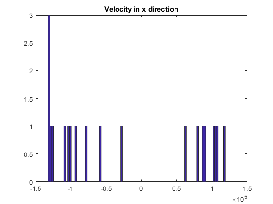
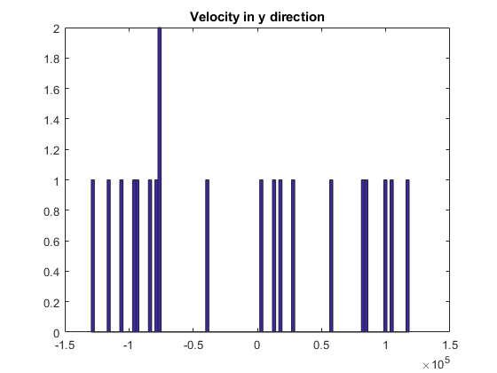
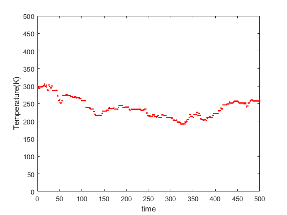
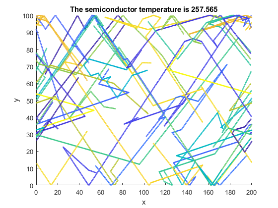

Contents
Collisions with Mean Free Path(MFP)
The purpose of this code is to simulate the scattering of electrons. When it scatters , the electron gets new velocities from the Maxwell-Boltzmann distributions
global C C.q_0 = 1.60217653e-19; % electron charge C.hb = 1.054571596e-34; % Dirac constant C.h = C.hb * 2 * pi; % Planck constant C.m_0 = 9.10938215e-31; % electron mass C.kb = 1.3806504e-23; % Boltzmann constant C.eps_0 = 8.854187817e-12; % vacuum permittivity C.mu_0 = 1.2566370614e-6; % vacuum permeability C.c = 299792458; % speed of light C.g = 9.80665; %metres (32.1740 ft) per s² nSim = 500; noe = 20; r2 = randi(360,noe,1); xbound = 200 ybound = 100 x = randi(200,noe,1); y = randi(100,noe,1); vth = sqrt((C.kb * 300)/(C.m_0 * 0.26)); vx = vth * cos(r2) ; vy = vth * sin(r2); colourArray= rand(noe,1); MFP = vth * 0.2 * 10^-12; figure(1); hist(vx,100); title("Velocity in x direction"); figure(2); hist(vy,100); title ("Velocity in y direction"); pScat = 1 - exp((-35 * 10^-16)/(0.2 * 10^-12)); %PscatArray = pScat * ones(noe,1) for t = 1:nSim vxc = vx; % create copy of vx vyc = vy; % create copy of vy [n,m] = size(vx); [n1,m1] = size(vy); %%randomly permutation of positions in vx and vy%%% idx = randperm(n); randomvx = vx; randomvx(idx,1)= vx (:,1) ; idy = randperm(n1); randomvy = vy; randomvy(idy,1) = vy(:,1); %Modelling scattering%%%%%% rScatter= rand(noe,1); % this gives 1s and 0s. 1 means it scatters tempScatter = rScatter < pScat; randomvx = tempScatter .* randomvx; % not scattered are 0s randomvy = tempScatter .* randomvy ; % not scattered are 0s %not scattered notScatter = rScatter >= pScat; %%%%%%%%%%%%%%%%%%%%%%%%% vx = vx .* notScatter; % the scattered vx are now 0 vy = vy .* notScatter; % scattered vy = 0 vx = vx + randomvx; vy = vy + randomvy; %%%%%%%%%%%%%% xc = x; % x copy yc = y; % y copy %Reflecting for y bounds% temp = y >= ybound ; temp1 = y < ybound ; temp = temp * -1; tempHigher = temp + temp1; temp2 = y <= 0; temp3 = y > 0; temp2 = temp2 * -1; tempLower = temp2 + temp3; vy = vy .* tempHigher; vy = vy .* tempLower; %%%%%%%%%%%%%%%%%%% % when x > 200%%%%% tempx1 = x <= 200; x = x .* tempx1; %%%%%%%%%%%%%%%%%% %%When x goes less than zero , come from 200 %%%%% tempx2 = x < -0.1; tempx2 = tempx2 * 200; tempxFinal = x + tempx2; x = tempxFinal; %%%%%%%%%%%%%%%%%%% dx = vx * (1/200000); dy = vy * (1/200000); x = x + dx; y = y + dy; vsq = (vy).^2 + (vx).^2 ; average = mean(vsq); figure (3) semiCTemperature = (average *(0.26)* C.m_0)/(C.kb); plot(t , semiCTemperature,'.r'); xlabel("time") ylabel("Temperature(K)") axis([0 nSim 0 500]); hold on figure(4) scatter(x,y,3,colourArray); axis([0 200 0 100]); xlabel("x"); ylabel("y"); title ("The semiconductor temperature is " + semiCTemperature); pause(0.1); hold on end
xbound = 200 ybound = 100   
Temperature over time
From the plot , we can see that the temperature changes, as it does not maintain the same velocity that it started with. It is also seen that the electron scatters randomly during its trajectory